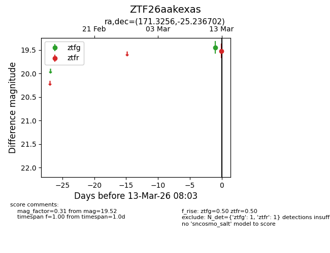
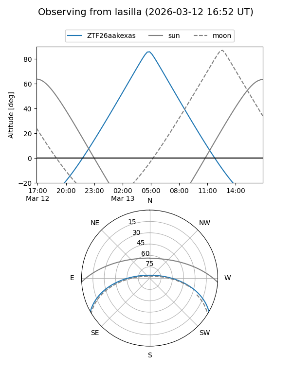
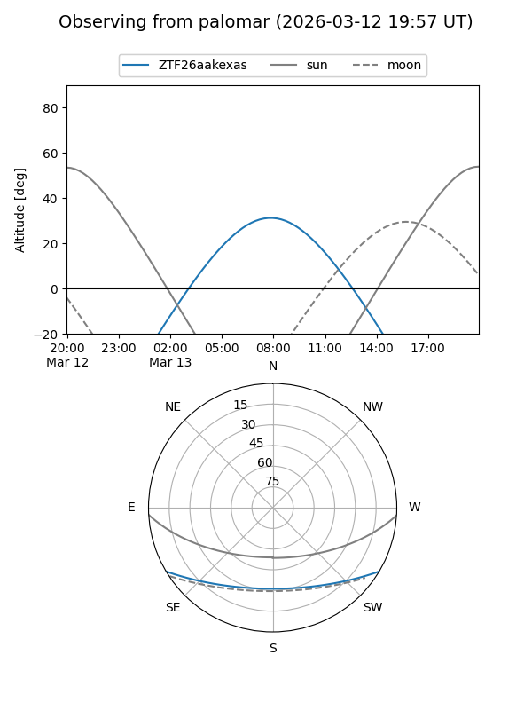

ZTF26aakexas
Target ZTF26aakexas at 2026-03-13 08:05
Aliases and brokers:
FINK: link
Lasair: link
ALeRCE: link
alt names
ZTF26aakexas (ztf,fink_ztf)
Coordinates:
equatorial (ra, dec) = 171.3256,-25.23670
equatorial (HMS+DMS) = 11:25:18.14,-25:14:12.13
galactic (l, b) = (279.4192,+33.67202)
Flags:
Photometry:
last ztfg=19.45, ztfr=19.52
1 ztfg, 1 ztfr detections
Lightcurve

Visibility


Additional plots